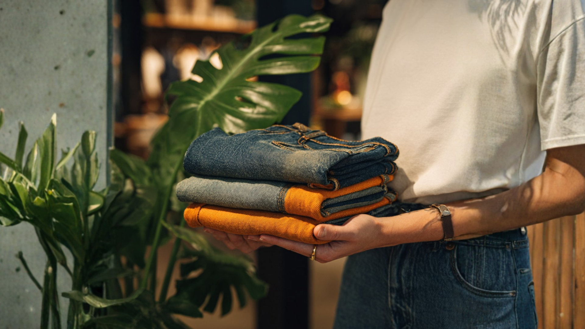
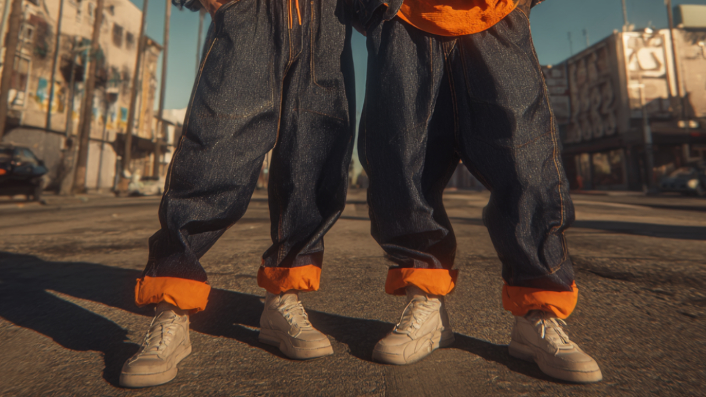

CUFFED is a Los Angeles-based premium denim concept developed through the lens of global supply chain strategy. The project combines brand building and operations planning, proposing a unisex denim label defined by oversized cuffs, billowed silhouettes, and a sourcing model built around quality, sustainability, and ethical accountability.
This project was created as a supply chain strategy process book and supporting course presentation. Rather than focusing only on creative direction, the work connects the brand idea to real operational decisions, including supplier rankings, country evaluation, assortment planning, placement, and distribution. The result is a concept that treats sourcing and brand identity as inseparable.
This comprehensive analysis of four key countries, Mexico, Guatemala, Vietnam, Turkey, primarily aims to identify key country traits and the relationship between each nation’s manufacturing sector, its denim industry, and Cuffed Inc.
Manufacturing Portion:
33%
The supplier ranking analysis for Mexico evaluated Rio Sul, Grupo Denim, and Siete Leguas across categories such as abilities, capacity, costs, customer service, quality, flexibility, lead-time, and sustainability alignment. Siete Leguas ranked highest overall with an average score of 9, driven by superior craftsmanship, advanced innovation, global luxury partnerships, and leadership in ethical production. Grupo Denim followed closely with an equally strong score of 9, reflecting high-volume capability, rapid lead times under six weeks, and extensive R&D-driven wash development. Rio Sul ranked slightly lower at an average of 8, showing strong integration from weaving to finishing and competitive nearshore pricing but slightly less scalability. Collectively, the Mexican supplier network demonstrates exceptional readiness for Cuffed’s premium denim production strategy, balancing efficiency, quality, and ethical manufacturing standards.
Manufacturing Portion:
35%
The supplier analysis for Guatemala compares Hansae Pinula S.A., Denimatrix, and Pearl Global, revealing Denimatrix as the leading partner with an average score of 9. Denimatrix excels in quality, flexibility, and sustainability leadership, offering advanced denim engineering, efficient mid-to-large order capacity, and robust CSR compliance. Hansae Pinula follows closely with an average score of 8, supported by multinational backing, high-volume capacity, and a strong logistics network, making it a reliable large-scale nearshore partner. Pearl Global, while ranking similarly at 8, represents a smaller, agile operation well-suited for short lead times and quick-turn projects. Overall, Guatemala’s supplier base demonstrates a powerful combination of cost-effectiveness under CAFTA-DR, technical sophistication, and ethical compliance that aligns tightly with Cuffed’s brand principles and scalability goals.
Manufacturing Portion:
32%
The supplier analysis for Vietnam evaluated TAL Apparel, Phong Phu International, and VT Garment Co., positioning TAL Apparel as the top performer with an average score of 9. TAL Apparel leads through advanced engineering, automation, and exemplary quality assurance, supported by partnerships with major global brands such as Levi’s and Patagonia. Phong Phu International scored an average of 8, offering strong textile integration, cost advantages, and regional responsiveness combined with compliance to ISO 14001 and fair-labor initiatives. VT Garment Co. also scored an average of 8, standing out for flexibility, rapid sampling, and mid-range production agility but less scalability. Collectively, Vietnam’s supplier network reflects a robust, export-focused ecosystem emphasizing ethical compliance, cost competitiveness, and technical innovation aligned with emerging regional and global sourcing trends.
Manufacturing Portion:
0%
The supplier analysis for Turkey evaluated Ozak Tekstil, Taypa, and Strom across multiple performance metrics including capabilities, quality, customer service, lead times, and sustainability alignment. Taypa achieved the highest overall average score of 9, recognized for its world-leading denim innovation, automation, and global partnerships with luxury and athleisure brands. Ozak Tekstil followed closely with an average score of 8, showing strong vertical integration, efficient logistics, and robust sustainability certifications such as GOTS and Oeko-Tex. Strom ranked equally at an average of 8, performing well for agility and niche designer production but limited by smaller capacity. Ultimately, we decided not to utilize Turkey as a manufacturing hub as high costs due to duty rates and tariffs along with higher labor costs were far riskier when compared to Vietnam. They also have high inflation and currency volatility with recent concerns regarding labor law practices which would increase our audit costs and potentially compromise CUFFED’s values.
I served as the head of research for Turkey's country and manufacturers for this project. My responsibilities included designing the brand language and image, as well as defining the mission, vision, values, and name. Additionally, I led the tech pack development and was part of the product line strategy team, which ultimately contributed to the creation of the final near-shore strategy.

CUFFED’s near-shore production strategy prioritizes efficiency, agility, and margin optimization by concentrating manufacturing in Guatemala (35%) and Mexico (33%) while maintaining diversification through Vietnam (32%). Nearshoring enables faster lead times, lower transportation costs, and better alignment with North American retail demand cycles. Financially, the strategy is supported by strong weighted margins, Guatemala achieving the highest retail (83.5%) and wholesale (67.5%) returns, Mexico maintaining competitive levels with tariff advantages, and Vietnam providing cost diversification despite longer transit times. Combined, these yield a global weighted margin of 77.14%, validating the profitability of a near-shore model.
Open to internships, collaborations, and conversations about luxury brand strategy.